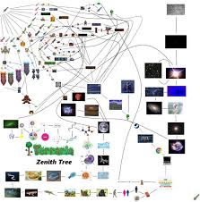

Ik ben geboren in Haarlem en woon daar nu al mijn hele leven.
Ik kom van een kleine middelbare school genaamd De HBM (Haemstede Barger Mavo).
Op mijn middelbare school is het toilet een keer opgeblazen door kinderen.
Mijn woonplaats
Ik woon al mijn hele leven in Haarlem. In de sporthelden buurt.

In mijn vrije tijd
Ik speel graag spellen op mijn laptop en collecteer graag dingen. Dus ik zit graag lange tijd achter mijn laptop om nieuwe dingen voor mijn collectie te vinden.
Ik bak ook soms dingen zoals wafels en arroz con leche.
Mijn collecties
Ik collecteer veel dingen zoals Pokemon kaarten,Funko's en veel soorten puzzels.